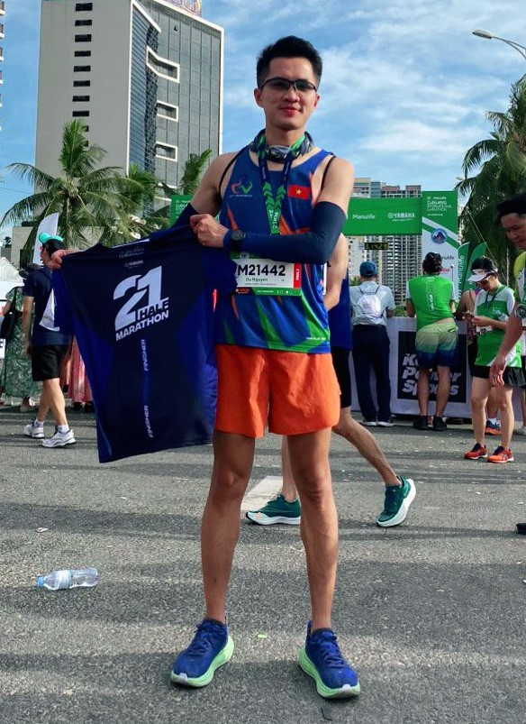
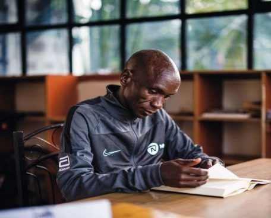
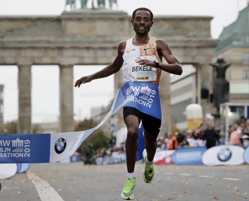

The article introduces Eliud Kipchoge's training regimen at the training camp after he returned from the Olympics...
Read more
RUN FOR SELF

| Name: | Long Tran Phi |
| Nick name: | Suon Rym |
| Company: | FPT SOFTWARE DANANG |
| StravaId: | Phi Long |
| Half Marathon: | 2:02:14 |
| Full Marathon: | #N/A |
| Short bio: | I love running and overcoming myself. I bring that into my work every day. |


Kenenisa Bekele is an Ethiopian long-distance runner who won gold medals in both the 5000 m and 10,000 m events...
Read more
The article introduces Eliud Kipchoge's training regimen at the training camp after he returned from the Olympics...
Read moreThe article introduces Eliud Kipchoge's training regimen at the training camp after he returned from the Olympics...
Read more